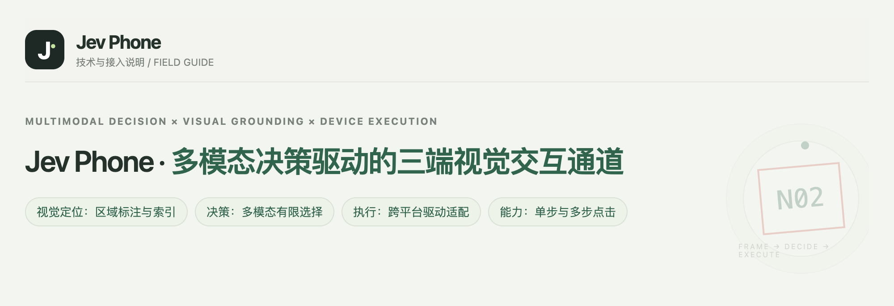
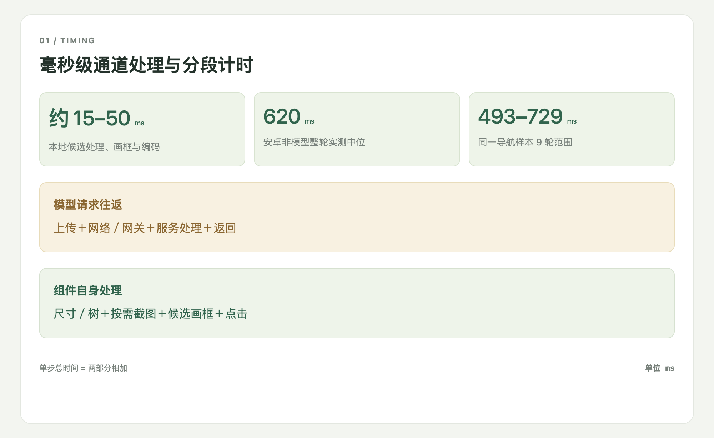
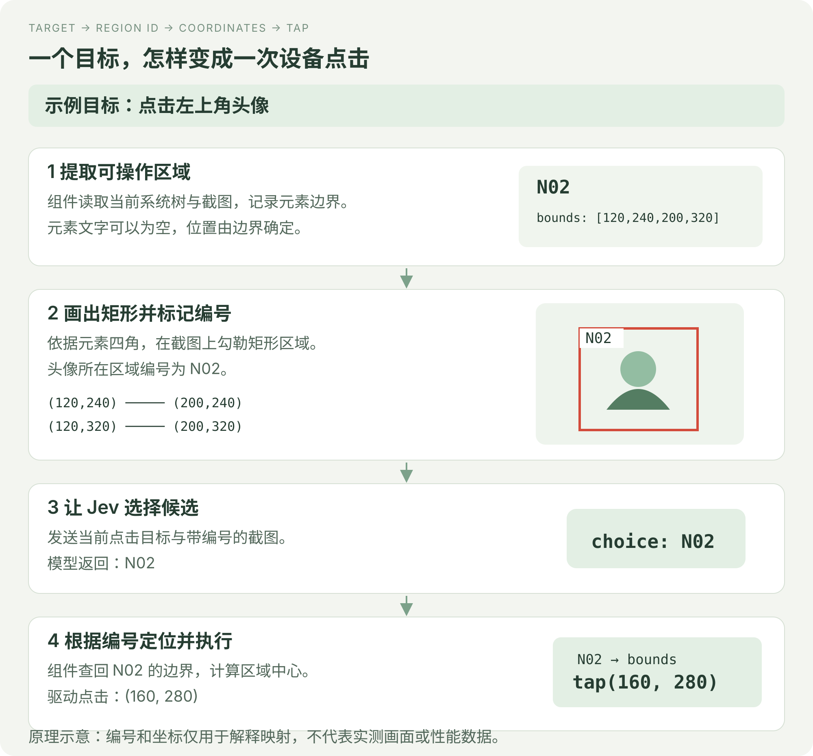
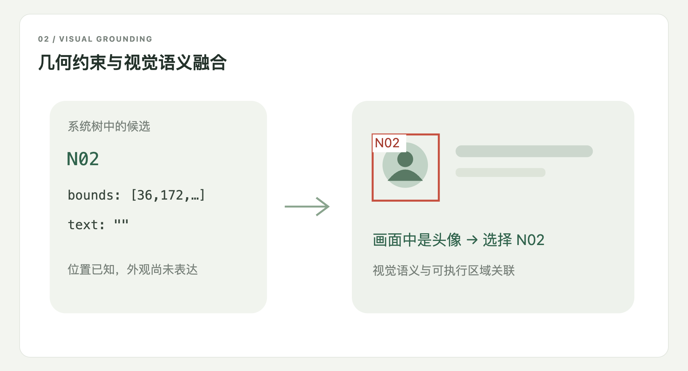
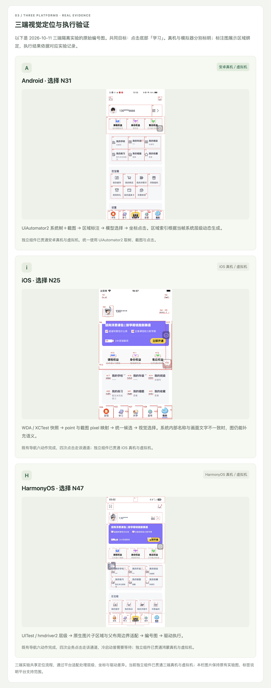

毫秒级本地处理的三端多模态点击 SDK
Android · iOS · HarmonyOS
经济、快速、准确
Jev Phone 将 Jev 多模态决策接到三端设备上，为已有 Agent、测试平台和脚本提供可独立调用的手机点击能力。调用方给出点击目标，SDK 完成当前画面的定位和执行。
它承接从“知道要操作什么”到“实际点到设备上”的这一段。你可以继续使用自己的任务规划、缓存和业务判断，不需要引入完整 AI Phone 框架。

安卓真机连续执行四步：基础 → 中等 → 困难 → 保存修改。起始画面已打开难度弹窗，最终保存为困难。秒表按真实时间连续计时，视频未加速。
| 步骤 | 模型往返 | SDK本地处理 | 页面稳定等待 | 整步合计 |
|---|---|---|---|---|
| 基础 | 763.28 ms | 490.99 ms | 658.00 ms | 1,912.27 ms |
| 中等 | 646.39 ms | 289.80 ms | 665.00 ms | 1,601.19 ms |
| 困难 | 647.78 ms | 296.26 ms | 702.00 ms | 1,646.04 ms |
| 保存修改 | 706.62 ms | 301.97 ms | 0.00 ms | 1,008.59 ms |
整步合计包含点击后的页面稳定等待，通过连续截图对比判断画面是否稳定；末步没有后续步骤，因此不追加等待。第一步低于2秒，其余三步均低于1.7秒；整轮实际耗时 6,170.82ms。本地 SDK 已实现毫秒级处理；模型往返耗时则受你的网络状况与模型服务响应影响，是整步耗时波动的主要来源。
已有安卓实验中，本地候选处理、画框与编码耗时 15–50ms；非模型整轮中位为 620ms，同一导航样本9轮范围为 493–729ms。这些数据不包含模型请求、初始化与页面稳定。
每一步整体耗时还包括设备采集、候选处理、模型往返、点击和该步后续衔接。完整分段记录分别列出这些时间。

当前接入的多模态 Jev 采用 有限选项决策接口：它结合图像选择给定候选，这种接入方式并不直接返回设备操作指令或可执行的点击坐标。因此，从模型选中目标到设备实际点击，还需要组件完成定位与动作绑定。
我们先从系统树中提取可操作元素的边界，用四角在截图上勾勒出矩形，并为每个区域标记编号。Jev 接收当前目标和带编号的图像，只需选出对应编号；组件再根据编号找回元素边界，计算中心坐标，交给平台驱动执行点击。代码保存左上角与右下角坐标，由此确定矩形四角。 实际编号图还以中心红点和引线标明点击位置，编号会避让，重叠展示框会围绕原中心缩小；这些绘图处理不会改变候选的原始边界和点击坐标。

矩形的位置来自系统树，目标的文字、图标和外观语义来自截图。例如，节点文字为空，但画面中显示的是头像：Jev 可以依据图像识别头像并选择它的编号，组件则用同一编号找回已知边界。这样，多模态选项决策就能对应到真实可操作元素，而不需要模型自己生成坐标。

目前已完成三端适配：安卓使用 UiAutomator2，iOS 使用 WDA / XCTest，鸿蒙使用 UITest / hmdriver2。组件把各端的系统层级、截图、显示尺寸与点击通道接入同一候选定位流程，并处理 iOS 截图像素与 WDA point 的坐标映射。三端均支持真机与虚拟机，使用同一接口完成单步和连续点击。
使用前，需要准备已授权、保持解锁的设备及对应平台服务，再提供所选模型通道的 Key：
| 平台 | 需要准备 |
|---|---|
| Android | ADB 能识别设备，USB 调试已授权，UiAutomator2 服务可运行。 |
| iOS | 真机已开启开发者模式并完成信任，签名后的 WDA 服务已运行且地址可访问。 |
| HarmonyOS | HDC 能识别并连接已授权设备，UITest / hmdriver2 服务可用。 |
具体操作见三端设备准备。下面保留三端原始图例，展示候选编号与可执行区域的绑定。

把手机点击能力接到你已有的程序中：准备好设备服务和模型 Key，创建目标平台的 Clicker。单个点击目标调用 click(target)，一组有序目标调用 run(text)；组件返回选中区域、坐标、驱动状态和分段耗时，让你的程序继续处理后续流程。
接入不需要运行 Demo 网页或数据库。安卓、iOS、鸿蒙分别使用 AndroidClicker、IOSClicker、HarmonyClicker，模型通道配置和异常处理见接入指南。
SDK接入指南 · 三端设备准备 · 调用示例 · 多设备并行
当前支持 Android、iOS、HarmonyOS 真机与虚拟机上的单步和连续点击，完成画面采集、候选生成、模型选择、点击执行，并返回结果与计时。
后续可扩展输入、滚动、长按等动作。任务规划、业务断言、应用启动和设备调度由现有系统承接，可以围绕点击组件继续集成。
版本、升级与维护 · 当前版本 0.1.1。
使用 Python 3.10+，可直接从 PyPI 安装：
python -m pip install 'jev-phone[android]==0.1.1'
iOS 安装 jev-phone，鸿蒙安装 jev-phone[harmony]，Demo 安装 jev-phone[demo]。运行仓库中的 examples 脚本仍需下载完整源码。
需要 Python 3.10+（例如 python3.11）；下面命令适用于 macOS / Linux。也可从公开仓库或源码包安装，安装方法见升级与维护。从仓库安装固定版本：
git clone https://github.com/dongxinsuperman/jev-phone.git
cd jev-phone
git checkout v0.1.1
python3.11 -m venv .venv
.venv/bin/pip install -e '.[android]'
安卓安装 .[android]，iOS 安装 .，鸿蒙安装 .[harmony]；同时接三端使用 .[android,harmony]。先按三端设备准备启动对应设备服务并解锁设备、打开目标应用。将示例 serial 替换为 adb devices -l 中的真实编号；示例步骤要求当前应用中存在对应按钮。默认使用 OpenRouter Decisions，输入该账号的 Key；该账号须能调用所配置的模型接口。SDK 不会启动应用或替你登录。
from getpass import getpass
from jev_phone import AndroidClicker
with AndroidClicker(
serial="YOUR_DEVICE_SERIAL",
api_key=getpass("OpenRouter Key: "),
provider="openrouter",
) as phone:
report = phone.run("打开默认难度设置；选择中等难度；保存修改")
print(report["results"])